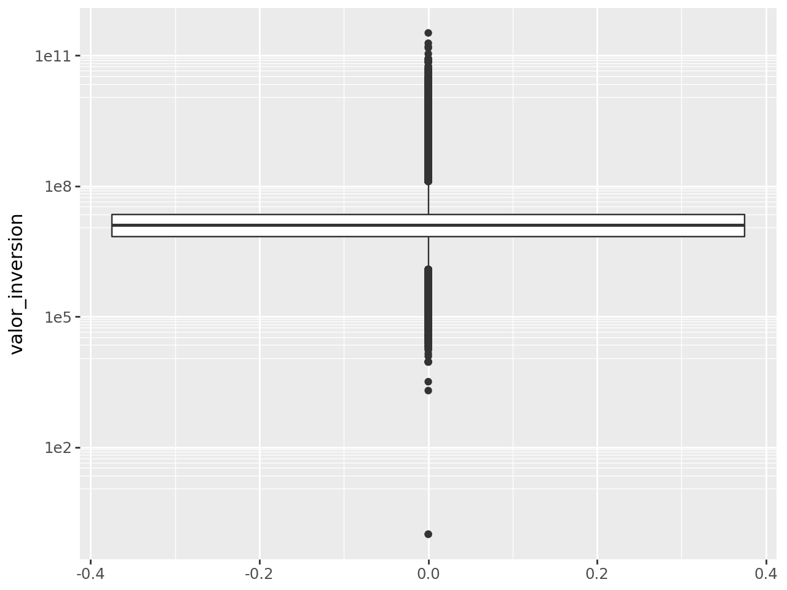
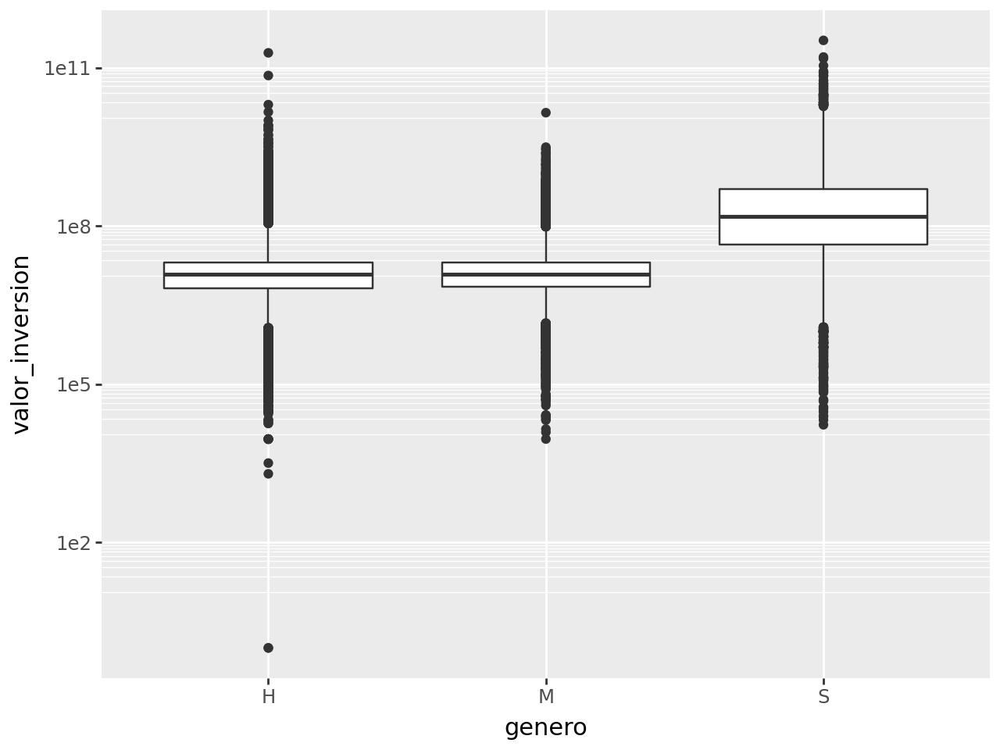
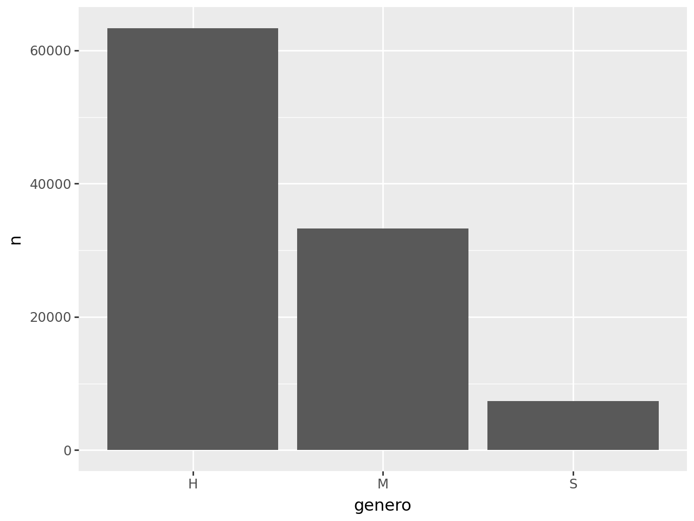

import pandas as pd
from plotnine import ggplot, aes, geom_boxplot, scale_y_log10, geom_col
from siuba import _, countTítulo
Subtítulo
Importando bibliotecas
Importando datos
creditos = pd.read_csv("../../datos/colocaciones_créditos_agropecuarios_2024.csv")Información de la base de datos
creditos.info()<class 'pandas.core.frame.DataFrame'>
RangeIndex: 104017 entries, 0 to 104016
Data columns (total 14 columns):
# Column Non-Null Count Dtype
--- ------ -------------- -----
0 year_es 104017 non-null int64
1 mes 104017 non-null int64
2 fuente_colocacion 104017 non-null object
3 tipo_productor 104017 non-null object
4 valor_inversion 104017 non-null float64
5 departamento_inversion 104017 non-null object
6 municipio_inversion 104017 non-null object
7 mpio_posconflicto 104017 non-null object
8 plazo 104017 non-null int64
9 linea_de_produccion 104017 non-null object
10 destino_de_credito 104017 non-null object
11 genero 104017 non-null object
12 latitud 104017 non-null float64
13 longitud 104017 non-null float64
dtypes: float64(3), int64(3), object(8)
memory usage: 11.1+ MBDatos booleanos (bool)
- True
- False
2 > 3False2 < 3TrueVisualización
Boxplot
(
creditos >>
ggplot(aes(y = "valor_inversion")) +
geom_boxplot() +
scale_y_log10()
)
(
creditos >>
ggplot(aes(x = "genero", y = "valor_inversion")) +
geom_boxplot() +
scale_y_log10()
)
Conteo de créditos por género
- Tabla:
(
creditos >>
count(_.genero)
)| genero | n | |
|---|---|---|
| 0 | H | 63357 |
| 1 | M | 33295 |
| 2 | S | 7365 |
- Gráfico:
(
creditos >>
count(_.genero) >>
ggplot(aes(x = "genero", y = "n")) +
geom_col()
)